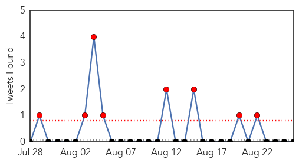
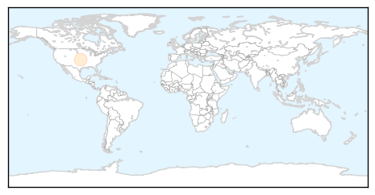

Cholera
30-Day Web Trend
1 alerts, 3 warnings
30-Day Twitter Trend
8 alerts, 0 warnings

Article Locations

Article Confidences

Top Articles:
- 0.964
- Cholera outbreak in the West and Central Africa: Regional Update, 2014 (Week 31) [EN/FR] - Nigeria
- 0.932
- Ethiopia: Tens of thousands of South Sudanese refugees receive cholera vaccine
- 0.919
- Ethiopia: Tens of thousands of South Sudanese refugees receive cholera vaccine
- 0.908
- Ethiopia Tens of thousands of South Sudanese refugees receive cholera vaccine
- 0.907
- Tens of thousands of South Sudanese refugees receive cholera vaccine - Ethiopia
- 0.856
- Ho records two cholera cases
- 0.794
- RESEC Outlines Basic Directives To Tackle Cholera
- 0.792
- Ashanti Region adopts measures in control of cholera
- 0.748
- MSF starts cholera vaccination drive for refugees in Ethiopia - World
- 0.746
- MSF starts cholera vaccination drive for refugees in Ethiopia
- 0.731
- MSF starts cholera vaccination drive for refugees in Ethiopia
Top Tweets:
-
No tweets found for Aug 26, 2014
Mold/Fungal
30-Day Web Trend
0 alerts, 0 warnings

30-Day Twitter Trend
0 alerts, 0 warnings

Article Locations
Article Confidences

Top Articles:
Top Tweets:
-
No tweets found for Aug 26, 2014